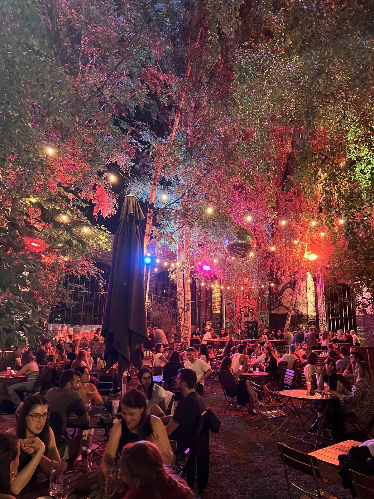
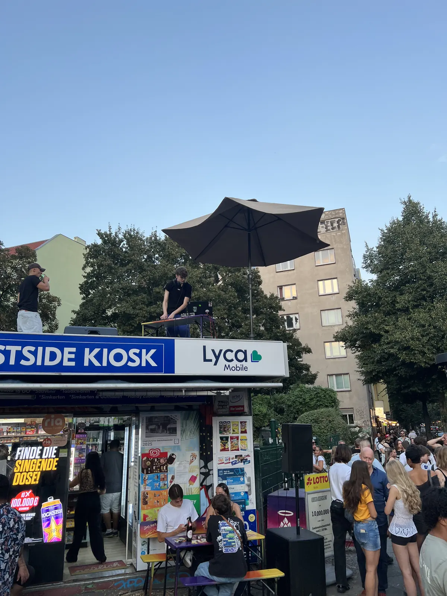
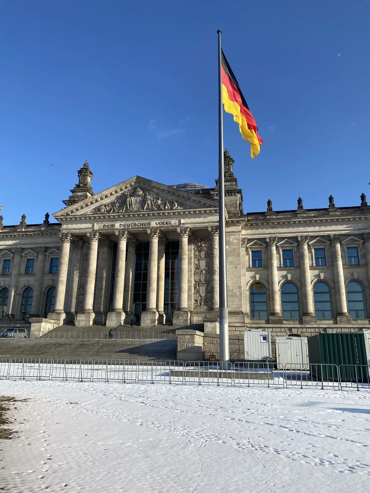
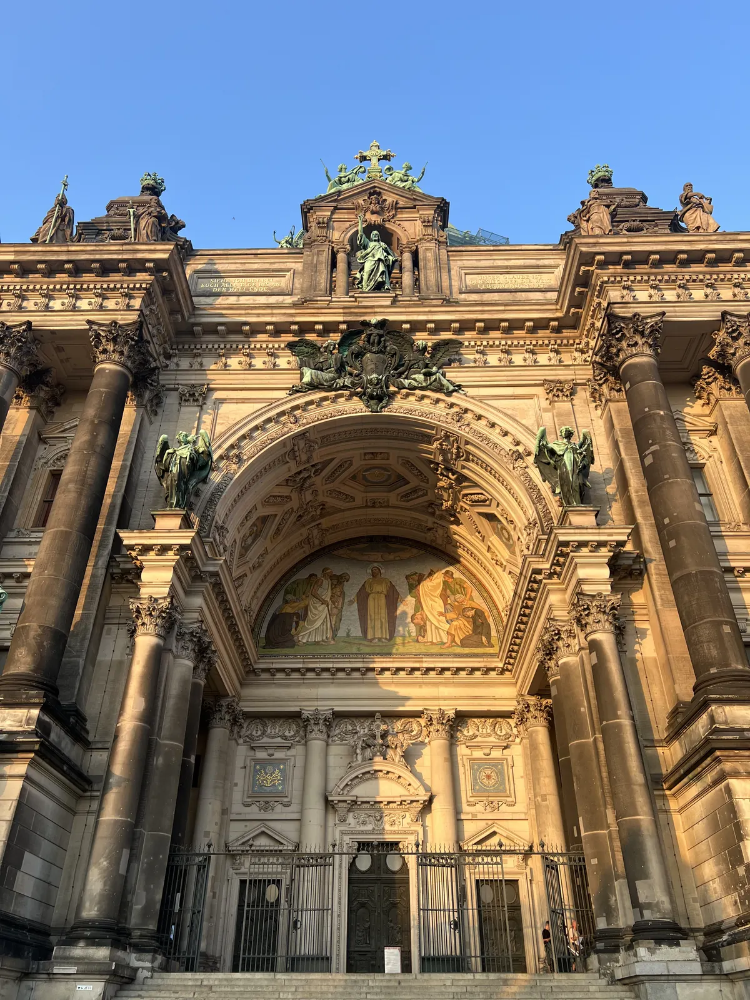
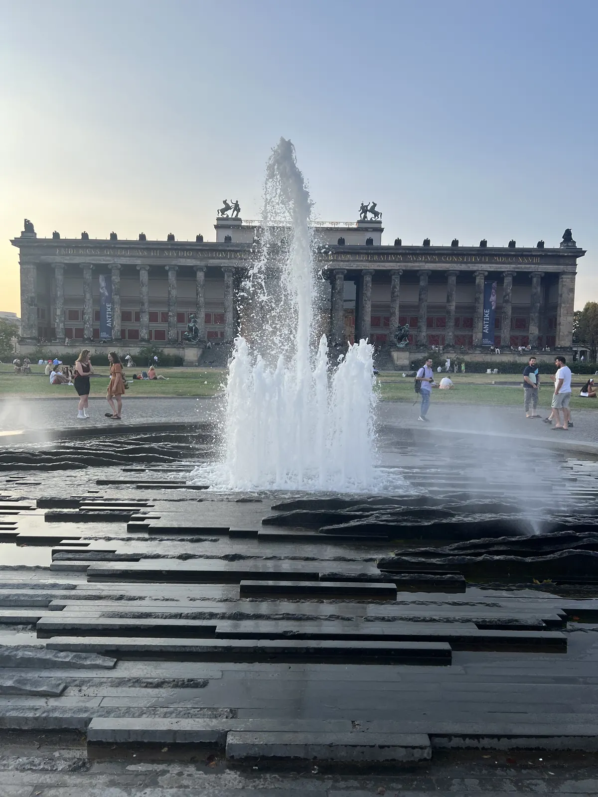
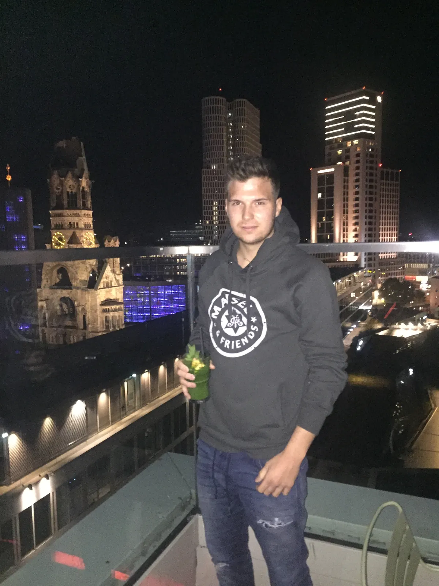
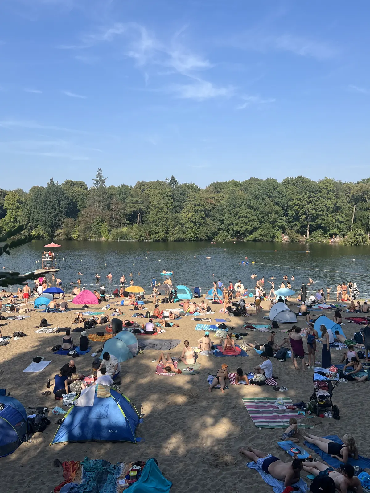

🇩🇪 Berlin Guide: 16 Orte – Mauerpark, Markthalle Neun, Teufelsberg, East Side Gallery & Hidden Gems

Inhaltsverzeichnis
In kaum einer Stadt stehst du so oft an einem Ort, an dem Weltgeschichte passiert ist – und eine Stunde später in einer Bar auf einem Parkhausdach. Preise und Zeiten sind Richtwerte (Stand 2026).
🗺️ Karte: 14 Orte auf einen Blick
Meine Story in Berlin
Ich war in Berlin, und genau diese Mischung macht die Stadt aus. Mein Tipp: sonntags in den Mauerpark – Flohmarkt und Karaoke im Amphitheater sind Berlin in Reinform. Dazu Streetfood in der Markthalle Neun und abends Friedrichshain rund ums RAW-Gelände. Und einmal mit dem Rad über die Landebahn des Tempelhofer Felds.
Dieser Guide enthält Werbe-Links (GetYourGuide, Omio). Wenn du darüber buchst, bekomme ich eine kleine Provision – du zahlst keinen Cent mehr. Preise und Öffnungszeiten ändern sich – vor dem Besuch kurz prüfen.
🆓 Kostenlos erleben
6 Orte in Berlin, die du ohne Eintritt oder komplett gratis erleben kannst (bei manchen kostet nur ein Teil, z. B. Turm oder Museum):
Auf einen Blick
So kommst du hin und herum
Berlin erreichst du per ICE, Flug (BER) oder Fernbus. In der Stadt: S-Bahn, U-Bahn, Tram und Fahrrad.
Der Flughafen BER ist per Flughafenexpress und S-Bahn mit dem Zentrum verbunden; der Hauptbahnhof liegt mitten im Regierungsviertel. In der Stadt nutzt du S-Bahn, U-Bahn, Tram und Bus (Ticketzonen A/B/C beachten). Fahrpläne und Tarife vorher prüfen.
Berlin ist groß; plane die Wege realistisch.
1. Must-Sees
Mauerpark am Sonntag🆓 Kostenlos erlebbar
Markthalle Neun🆓 Kostenlos erlebbar
Tempelhofer Feld🆓 Kostenlos erlebbar
Friedrichshain & RAW-Gelände


Brandenburger Tor & Reichstag
Das Brandenburger Tor ist das Wahrzeichen Berlins und ein Symbol der deutschen Teilung und Einheit. Ganz in der Nähe steht das Reichstagsgebäude mit der Glaskuppel, die du nach Anmeldung besuchen kannst (Anmeldung online vorher nötig). Der Blick von oben auf das Regierungsviertel lohnt sich.
Plane den Reichstagsbesuch im Voraus. Zeiten und Regeln vorher prüfen.
Tipp: Melde dich vorher für die Kuppel an.

East Side Gallery🆓 Kostenlos erlebbar
Die East Side Gallery ist ein rund 1,3 Kilometer langer Rest der Berliner Mauer, bemalt von Künstlern aus aller Welt. Das berühmte Bild des Bruderkusses ist hier zu sehen. Die Wand ist frei zugänglich. Komm früh, um Gruppen zu meiden.
Respektiere die Kunstwerke und schreibe nicht darauf.
Tipp: Komm früh am Morgen.
Gedenkstätte Berliner Mauer🆓 Kostenlos erlebbar
An der Bernauer Straße liegt die Gedenkstätte mit erhaltenem Mauerstreifen, Aussichtsturm und Dokumentationszentrum. Hier erfährst du, wie die Teilung Familien trennte und welche Fluchtversuche es gab. Der Besuch ist kostenlos.
Plane ein bis zwei Stunden ein.
Tipp: Plane ein bis zwei Stunden ein.
Museumsinsel
Die Museumsinsel ist UNESCO-Welterbe mit mehreren Museen, darunter das Pergamonmuseum (wegen Sanierung teilweise geschlossen – aktuellen Stand vorher prüfen), das Neue Museum mit der Büste der Nofretete und die Alte Nationalgalerie. Rund um die Insel liegen Dom und Spree.
Wähle ein oder zwei Museen aus. Tickets online buchen.
Tipp: Wähle ein bis zwei Museen und buche online.


Currywurst, Döner & Berliner Küche
Berlin hat eigene Klassiker: Currywurst mit Pommes, den Döner (in Berlin erfunden, so die Überlieferung), Berliner Pfannkuchen und Buletten. In Märkten wie der Markthalle Neun gibt es Streetfood aus aller Welt. Preise ändern sich; frag vorher.
Probiere beides und frag Einheimische nach Empfehlungen.
Tipp: Probiere Currywurst und Döner im Vergleich.
2. Verrückte Orte
Teufelsberg💎 Hidden Gem
Spreepark & Pool in der Spree💎 Hidden Gem
Kreuzberg & Neukölln – Kieze entdecken💎 Hidden Gem
Kreuzberg und Neukölln sind multikulturelle Viertel mit Cafés, Bars, Märkten und Streetart. Der Türkische Markt am Maybachufer (Di und Fr) ist ein Highlight (Zeiten vorher prüfen). Die Gegend ist lebendig, abends voll und manchmal laut.
Gehe am Nachmittag los und lass dich treiben.
Tipp: Komm zum Markt am Maybachufer.
Berliner Clubszene & Berghain-Kultur💎 Hidden Gem
Berlin ist für sein Nachtleben berühmt; viele Clubs haben strenge Türpolitik und Foto-Regeln. Wenn du feiern willst, informiere dich vorher über Stil und Regeln des Clubs. Es gibt auch Bars und Livemusik ohne strenge Tür.
Sei respektvoll, bring Bargeld mit und plane flexibel.
Tipp: Informiere dich vorher über Regeln und sei respektvoll.
Tiergarten & Siegessäule💎 Hidden Gem🆓 Kostenlos erlebbar
Der Tiergarten ist der große Stadtpark im Zentrum. Mitten im Park steht die Siegessäule, auf die du steigen kannst. Wege führen durch Wiesen und Wälder; ein Spaziergang ist eine gute Pause.
Verbinde den Besuch mit Brandenburger Tor und Reichstag.
Tipp: Steig auf die Siegessäule.
Monkey Bar – Rooftop über dem Zoo
Die Bar liegt im 10. Stock des Hotels im Bikini-Haus direkt am Bahnhof Zoo. Durch die Glasfront schaust du auf das Affengehege des Zoologischen Gartens, auf die Gedächtniskirche und über die Dächer der City West – daher der Name.
Am schönsten ist es zum Sonnenuntergang, wenn die Kirche angestrahlt wird. Auf der Terrasse wird es im Sommer schnell voll; unter der Woche und früh am Abend ist es entspannter.
Tipp: Früh kommen (vor 19 Uhr) oder einen Tisch reservieren.

Strandbad Plötzensee💎 Hidden Gem
Ein Natursee im Wedding mit hellem Sandstrand, Liegewiese, Kiosk und Badestegen – Strandgefühl mitten in der Stadt, keine halbe Stunde von Mitte entfernt. An heißen Tagen treffen sich hier Familien, Studenten und Feierabend-Schwimmer.
Das Strandbad ist in der Badesaison (ca. Mai bis September) bewirtschaftet und kostet Eintritt. Wer es ruhiger mag, kommt morgens oder am frühen Abend.
Tipp: Am Wochenende früh da sein – bei 30 °C ist die Wiese mittags voll.

Was Berlin ausmacht
1948/49 versorgten die Alliierten West-Berlin über die Luftbrücke. 1961 wurde die Mauer gebaut, rund 155 Kilometer lang; am 9. November 1989 fiel sie. Die Currywurst ist auch ein Berliner Kind: Herta Heuwer verkaufte sie 1949 zum ersten Mal.
📍 Diesen Guide in Google Maps speichern
1. Schnell: Route öffnen
2. Dauerhaft: als eigene Karte (2 Minuten)
- Lade die Datei mit allen Pins herunter (KML-Button unten).
- Öffne Google My Maps → „Neue Karte erstellen“ → „Importieren“ → Datei auswählen.
- Fertig – alle Orte stehen exakt an der richtigen Stelle, mit Nummer, Tipp und Link zum Guide.
- In der Google-Maps-App findest du die Karte unter „Gespeichert“ → „Karten“, auch unterwegs.
⬇️ Alle Pins für Google Maps (KML) ⬇️ Ortsliste herunterladen (CSV)
3. Einzeln speichern
Dein Plan
Tag 1: Zwei Tage in Berlin
- Tag 1 – Brandenburger Tor, Reichstag, Museumsinsel, Gedenkstätte Berliner Mauer
- Tag 2 – East Side Gallery, Markthalle Neun, Kreuzberg
- Sonntag – Mauerpark, Tempelhofer Feld
- Abend – RAW-Gelände oder Bars
Häufige Fragen
Wann ist der Mauerpark am besten?
Sonntags – Flohmarkt und Karaoke.
Wie viele Tage braucht man in Berlin?
🗺️ Alle Orte auf meiner Karte → Mehr Guides und Reels auf Instagram: @hiddengem.atlas
Guide teilen: Per WhatsApp